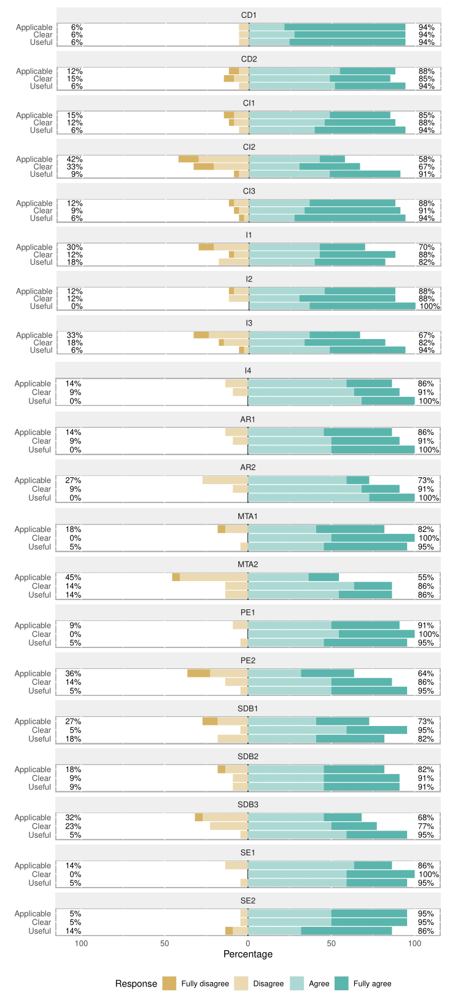
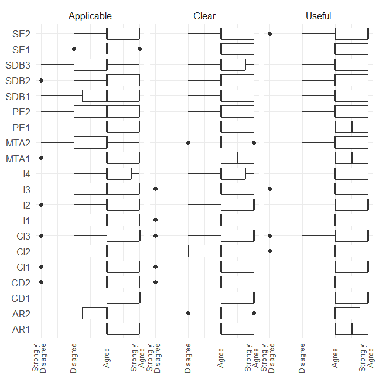
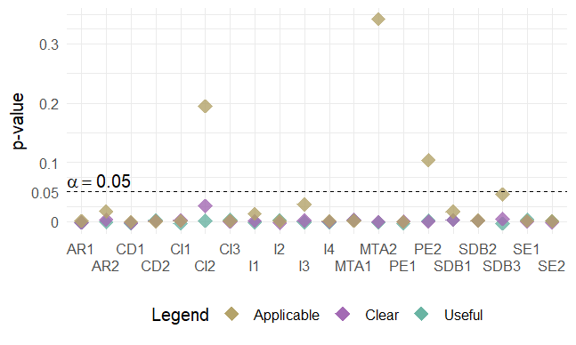

Evaluation
This section presents the outcomes of our validation with industry and academia experts, conducted through questionnaires available in the replication package section of the website. Our aim is to assess whether the guidelines synthesized from literature and insights from open-source ROS repositories are perceived as useful, clear, and applicable by developers and QA teams testing and verifying ROS code. We formulate three hypotheses per guideline:
- H1. Overall, the guideline is useful. (Usefulness)
- H2. The formulation of the guideline is clear. (Clarity)
- H3. The guideline is applicable to ROS-based systems. (Applicability)
Unlike usefulness, applicability refers to the extent to which respondents consider that the guideline could be directly applied to ROS-based systems they have worked with. Conversely, usefulness pertains to ROS-based systems in general.
Summary of Respondent Profiles
| ID | Time | Experience | Organization | Domain | Role | Individuals |
| P1 | >10y | Contributed to ROS packages | Academia and Industry | Service Robotics | Developer | 18 |
We received 55 questionnaire responses, with 33 from developers and 22 from QA teams. These responses were obtained through targeted emails and posts in the ROS discourse forum. The questionnaire was tailored to test the three hypotheses, and respondents were also asked about their experience in robotics, ROS experience, organizational background, and robotics domains they've worked on.
Likert Plot for Questionnaire Answers
Figure 1: Likert plot for the questionnaire answers
The Likert plot provides an overview of the questionnaire responses. While most votes lean towards 'Agree,' some guidelines received 'Strongly Disagree' votes. We focus on analyzing disagreements, as they may indicate areas for further research.
Figure 2: Boxplots for the results bird’s eye view
In addition to the Likert plot, we conducted statistical analysis using boxplots to visualize whether the hypotheses hold for each guideline. Overall, developers and QA teams agree that the synthesized guidelines are applicable, useful, and clear.
Statistical Significance
Figure 3: Wilcoxon one-sample test for statistical significance (hypothesis: μ ≥ 0)
We tested the hypotheses for statistical significance using the one-sample Wilcoxon test. The tests confirm the statistical significance of the correlation between guidelines and attributes of applicability, clarity, and usefulness, except for guidelines CI2, MTA2, and PE2.
Practical Significance

Figure 4: Effect size for one sample Wilcoxon test for practical significance
Practical significance was assessed using the effect size calculated from the one-sample Wilcoxon signed-rank test. Guidelines with small effect sizes (CI2, MTA2, and PE2) required further data to strengthen conclusions, while guidelines with moderate and large effect sizes justify their practical significance.
Ultimately, we conducted a follow-up discussion with respondents who disagreed with the usefulness/applicability of CI2, MTA2, and PE2, and modified the guidelines